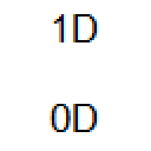

Curso Jogo 1D_0D — Aprenda a Jogar Minijogos Inéditos

- Apresentação do Instrutor: Sou Eduardo de Quadros, um autista brasileiro, nível 1 de suporte, graduado em Ciência da Computação em dezembro de 2021 e graduando em Marketing Digital, com previsão de conclusão para dezembro de 2025. Neste curso, ensinarei a jogar o jogo eletrônico que criei, chamado 1D_0D.
- Classificação Etária Livre: O jogo tem classificação etária livre. Muitos jogadores, mesmo adultos, preferem jogos sem restrições de idade.
- Preço do Curso: O curso custa R$ 5,00 por semana (preço líquido). No Kirvano, o preço bruto é de R$ 7,60 por semana, considerando a taxa percentual de 7,49% e a taxa fixa de R$ 2,00. Optei por cobrar uma assinatura semanal porque os alunos geralmente esquecem pequenos detalhes dos jogos e se beneficiam ao jogá-los repetidamente todas as semanas.
- Duração Livre do Curso: O curso não tem data de término. Os alunos podem permanecer matriculados pelo tempo que desejarem.
- Certificado do Curso: O curso tem duração livre, portanto não oferece certificado.
- Provas do Curso: O curso não aplica provas aos alunos em nenhum momento.
- Progresso do Aluno no Curso: O curso não apresenta progresso percentual concluído do aluno, pois a duração é livre. A ordem de ensino dos conteúdos é variável; não importa a sequência em que os conteúdos são ministrados.
- Período de Férias: Anualmente, o curso estará de férias de 1º de agosto a 30 de novembro. Mesmo durante esse período, a assinatura semanal continuará sendo cobrada.
- Entrada de Novos Alunos: Novos alunos podem ingressar na turma a qualquer momento, independentemente do número atual de inscritos.
- Plataforma de Videoconferência: Utilizo o Google Meet para as aulas. Minha câmera no Google Meet não é apenas a webcam do meu notebook; uso a câmera virtual do programa OBS Studio, que exibe simultaneamente minha webcam, a tela do jogo e um monitor de teclas pressionadas do teclado em tempo real.
- Público-Alvo:
- Não é necessário ter conhecimento prévio sobre jogos eletrônicos, basta gostar de jogos e querer aprender. O curso é voltado para ambos os gêneros, com a faixa etária entre 6 e 118 anos.
- O curso atrai pessoas com os seguintes interesses:
- Jogos eletrônicos simples e inéditos: O jogo combina mecânicas básicas (como pressionar a tecla espaço) com experiências sonoras e visuais únicas, atraindo jogadores casuais e entusiastas de jogos minimalistas.
- Acessibilidade e inclusão: O curso oferece adaptações para pessoas com deficiências físicas, cognitivas ou sensoriais, além de considerar necessidades específicas de idosos, crianças e mulheres que lidam com bebês.
- Entretenimento lúdico e educativo: Os minijogos podem ser usados como ferramentas de aprendizado ou relaxamento, atraindo educadores ou pais que buscam atividades recreativas para crianças.
- Exploração de sons e design de jogos: Interessados em design de jogos simples, efeitos sonoros criativos e experiências imersivas podem se beneficiar do curso.
- Interação social: A dinâmica do grupo no WhatsApp e as aulas semanais no Google Meet proporcionam uma experiência comunitária, ideal para quem busca interação social online.
- O curso resolve diversas dores dos potenciais alunos, incluindo:
- Falta de acessibilidade em jogos eletrônicos: Muitos jogos não são adaptados para pessoas com deficiências físicas, cognitivas ou sensoriais. Este curso oferece soluções específicas para esses públicos.
- Dificuldade em encontrar atividades inclusivas para toda a família: O curso permite que crianças, adultos e idosos participem juntos, com adaptações para diferentes idades e necessidades.
- Necessidade de lazer acessível e de baixo custo: Com um preço de R$ 5,00 por semana, o curso é acessível financeiramente e oferece uma rotina de lazer sem grandes investimentos de tempo ou dinheiro.
- Estresse ou monotonia no dia a dia: Os minijogos, especialmente os em 0D, oferecem experiências relaxantes e divertidas, ajudando a aliviar o estresse.
- Desafios de inclusão social: O grupo do WhatsApp e as aulas no Google Meet proporcionam um ambiente acolhedor para pessoas que podem se sentir isoladas, como idosos ou neurodivergentes.
- Dificuldade em aprender novas habilidades tecnológicas: O curso é projetado para pessoas sem conhecimento prévio em jogos eletrônicos, tornando-o acessível para iniciantes.
- Falta de tempo disponível na semana: Muitas pessoas têm agendas ocupadas e pouco tempo para atividades extras. O curso resolve isso ao oferecer apenas 30 minutos semanais de aula, aos domingos à tarde (UTC-3), permitindo que todos participem sem comprometer suas rotinas diárias.
- Desafios enfrentados por crianças no uso de tecnologia: Muitas crianças têm dificuldade em acompanhar instruções complexas ou entender mecânicas de jogos que não foram projetadas especificamente para sua faixa etária. Além disso, pais e responsáveis podem se preocupar com o impacto dos jogos eletrônicos na saúde visual, física e emocional das crianças. O curso oferece minijogos simples e intuitivos, como os em 0D, que são baseados apenas em sons e evitam sobrecarga visual. Além disso, o responsável pode supervisionar a criança durante as atividades e ajustar pausas regulares para descanso visual e físico. O uso de fones de ouvido e iluminação adequada também é recomendado para garantir conforto e segurança.
- Dificuldades físicas e sensoriais específicas de alunos deficientes: Alunos com deficiências físicas, cognitivas ou sensoriais frequentemente enfrentam barreiras significativas ao participar de atividades digitais. Por exemplo, alunos cegos podem ter dificuldade em acessar jogos visuais, enquanto alunos surdos podem não conseguir aproveitar jogos baseados em sons sem adaptações adequadas. O curso oferece adaptações específicas para diferentes tipos de deficiência. Para alunos cegos, os minijogos em 0D são totalmente acessíveis, pois dependem exclusivamente de sons. Para alunos surdos, os minijogos em 1D são acessíveis, e o curso recomenda o uso de intérpretes de Libras (ou outra língua de sinais) para descrever os sons. Além disso, o instrutor fornece suporte personalizado e sugere equipamentos adaptados, como teclados ergonômicos ou mouses especiais, para facilitar a interação.
- Limitações impostas pelo envelhecimento físico e cognitivo: Idosos, especialmente aqueles acima de 80 anos, enfrentam desafios como cansaço visual, dificuldades motoras para operar equipamentos tecnológicos e maior sensibilidade a estímulos sonoros intensos. Além disso, muitos idosos sentem-se excluídos de atividades modernas devido à falta de familiaridade com ferramentas digitais. O curso oferece adaptações específicas para idosos, como o uso de monitores maiores, teclados com teclas grandes e pausas frequentes durante as aulas. Para superidosos e centenários, o curso sugere a presença de um acompanhante para auxiliar na navegação e descrição de elementos visuais. Além disso, os minijogos em 0D são ideais para idosos com limitações visuais, pois dependem exclusivamente de sons.
- Sobrecarga física e emocional enfrentada por mulheres que lidam com bebês: Mulheres gestantes, lactantes ou que seguram crianças pequenas no colo com as mãos frequentemente enfrentam desconfortos físicos (como dores nas costas ou fadiga) e limitações de tempo para participar de atividades recreativas. Além disso, a necessidade constante de atenção ao bebê pode dificultar sua concentração e engajamento em atividades que exijam foco prolongado. O curso oferece orientações específicas para essas alunas, como o uso de mesas ergonômicas, cadeiras com bom suporte lombar e dispositivos hands-free (como microfones headset). Para mães lactantes, o curso sugere o uso de almofadas de apoio para o bebê e ajustes na câmera para permitir amamentação discreta durante as aulas. Além disso, o curso tem duração curta (30 minutos semanais), o que facilita a participação mesmo com rotinas ocupadas.
- Impacto emocional e físico causado por condições extremas ou temporárias: Alunos com peso extremo (obesos ou anoréxicos), altura extrema (gigantes ou anões), em pós-operatório, envelhecidos precocemente ou sob influência de substâncias (como álcool ou tabaco) enfrentam desafios únicos. Esses incluem desconforto físico em espaços inadequadamente adaptados, vulnerabilidade emocional devido a preconceitos sociais e dificuldades temporárias para realizar tarefas simples, como operar um computador ou seguir instruções claras. O curso oferece adaptações específicas para cada condição. Para alunos obesos, sugere-se o uso de cadeiras reforçadas e pausas frequentes para evitar desconforto físico. Para alunos anoréxicos, recomenda-se o uso de almofadas de apoio e iluminação suave para reduzir o cansaço visual. Para alunos em pós-operatório, o curso sugere ambientes tranquilos e sessões de jogo curtas para promover relaxamento. Para alunos envelhecidos precocemente, o curso oferece monitoramento de luz azul e simplificação de instruções para minimizar o estresse cognitivo.
- Para participar, você precisa ter um computador com Windows 10 ou Windows 11. Caso utilize Linux ou macOS, baixe o VirtualBox (da Oracle) e crie uma máquina virtual com Windows 10 ou Windows 11. Recomenda-se usar a opção Dinamicamente Alocado (e não Tamanho Fixo), para evitar reduzir a capacidade total do seu disco rígido (HDD ou SSD). É importante destacar que, ao utilizar o VirtualBox, o usuário não precisa que a máquina física atenda aos requisitos mínimos do sistema operacional usado dentro da máquina virtual. Por exemplo, mesmo que a máquina física use Windows Vista e não tenha os recursos necessários para rodar Windows 10 nativamente, ainda assim é possível instalar e executar o Windows 10 dentro do VirtualBox. Se você não tem computador e utiliza apenas celular (Android ou iPhone), infelizmente não poderá se inscrever no curso. Você pode morar em qualquer país, mas é essencial falar fluentemente o português, pois o jogo e as aulas são conduzidos nesse idioma. O curso acontece aos domingos, das 15:30 às 16:00 (UTC-3), sem intervalos. Independentemente do fuso horário do seu país, é importante ajustar seus horários de sono. Por exemplo:
- Se o curso ocorrer das 3:30 às 4:00 no seu fuso horário, você precisará dormir às 18h e acordar às 3h (9 horas de sono).
- Se o curso ocorrer das 23:30 às 0:00, você precisará dormir às 18h, acordar às 23h, voltar a dormir à 1h e acordar às 5h (também 9 horas de sono).
- Eu dou a carga horária de 30 minutos semanais para a turma, porque, para usuários pessoais do Google com o plano gratuito do Google One, o Google Meet permite, no máximo, 60 minutos de aula quando ela não é individual (ou seja, quando tem mais de duas pessoas participando ao mesmo tempo).
- Grupo do WhatsApp da Turma: Antes de iniciar o pagamento da assinatura semanal, o aluno deve entrar no grupo do WhatsApp. Todos os membros podem enviar mensagens, ver quem está no grupo e adicionar novos membros. No entanto, apenas eu posso editar as configurações do grupo.
- Convidados: Você pode convidar quantas pessoas quiser para o curso, mas cada pessoa (incluindo você) deve pagar sua própria assinatura semanal. Não há divisão de pagamentos.
- Pausas Durante as Aulas: Os alunos podem se ausentar temporariamente para ir ao banheiro ou beber água. Basta avisar, sem necessidade de formalidades.
- Inassiduidade do Aluno: Considero inassíduo o aluno que falta a uma aula, entra mais tarde ou sai mais cedo. Inassiduidades ocasionais são aceitáveis, mas habitualmente isso não será tolerado. Para cada inassiduidade, o aluno deve me avisar com 15 segundos de antecedência, informando o motivo.
- Desistência Livre do Aluno: Caso um aluno deseje desistir do curso, deverá me avisar com 15 segundos de antecedência, informando o motivo. Não é necessário avisar com 3 meses de antecedência, exceto nos casos em que haja um contrato formal entre os pais do aluno e eu, conforme o Código de Defesa do Consumidor do Brasil. Ao desistir, cancelarei a assinatura semanal do aluno na plataforma Kirvano e ele não poderá mais participar das aulas. Entretanto, a qualquer momento posterior, se o aluno desejar retornar ao curso, ele poderá fazê-lo, retomando sua participação nas aulas, a assinatura semanal e o grupo do WhatsApp.
- Crianças no Curso:
- Você pode convidar crianças para participar, e elas não precisam pagar a assinatura semanal. No entanto, você, como responsável, deverá arcar com a assinatura tanto para si quanto para a criança.
- As recomendações importantes de saúde, para diminuir o risco de passar mal, são:
- O responsável incluirá pausas regulares para descanso visual e físico.
- O responsável recomendará o uso de fones de ouvido para evitar estímulos sonoros excessivos.
- O responsável ajustará a iluminação do ambiente para reduzir o cansaço visual.
- As recomendações importantes de segurança, para diminuir o risco de ficar em perigo, são:
- O responsável supervisionará as crianças durante as aulas e ao jogar o jogo.
- O responsável avaliará previamente os conteúdos dos jogos para garantir que sejam adequados à idade e sensibilidade da criança.
- As recomendações importantes de conhecimento, para diminuir o risco de ter dificuldades, são:
- A criança poderá precisar de ajuda para entender as mecânicas dos jogos e acompanhar as instruções durante as aulas.
- O responsável atuará como mediador ou monitor, oferecendo suporte conforme necessário.
- Para usar o grupo do WhatsApp da turma, tem as seguintes dicas:
- Supervisão dos responsáveis: O responsável monitorará as mensagens no grupo para garantir que a criança entenda o conteúdo discutido.
- Participação ativa: O responsável participará das conversas no grupo, compartilhando dúvidas ou sugestões sobre como tornar a experiência mais acessível para a criança.
- Uso de emojis: O responsável usará emojis para expressar sentimentos ou reações, facilitando a comunicação com as crianças.
- Evitar distrações: O responsável ativará notificações silenciosas no celular para evitar distrações durante os momentos de estudo ou lazer da criança.
- Aluno Deficiente:
- Se um aluno for neurodivergente (como TEA, TDAH, TOC, TOD, Dislexia, Esquizofrenia, Síndrome ZTTK, etc.), ele precisará de um monitor (que ajuda o aluno a estudar em casa, sem necessidade de formação acadêmica específica) ou mediador (pedagogo que auxilia o aluno a participar da aula dentro da sala de aula na escola ou universidade). Se um aluno for cego, ele poderá participar dos minijogos em 0D normalmente, pois eles são baseados exclusivamente em sons. No entanto, para os minijogos em 1D, que dependem de elementos visuais, o aluno precisará de uma pessoa ao seu lado para descrever os elementos visuais da tela e guiá-lo durante a jogabilidade. Essa pessoa pode ser alguém próximo ao aluno ou um assistente contratado especificamente para essa função. Se um aluno for surdo, ele poderá participar dos minijogos em 1D normalmente, mas terá dificuldades nos minijogos em 0D, pois esses dependem exclusivamente de sons. Nesse caso, recomendamos que o aluno tenha um intérprete da língua de sinais do país onde reside (por exemplo, Libras no Brasil). O intérprete pode descrever os sons de forma simplificada, permitindo que o aluno entenda a dinâmica do jogo, mesmo que a experiência seja adaptada. Se um aluno for daltônico, ele precisará de uma pessoa ao seu lado para informá-lo sobre as cores reais exibidas no jogo e as cores que ele está percebendo.
- Se um aluno for cadeirante, sugerimos as ações:
- Certificar-se de que o espaço de trabalho esteja configurado ergonomicamente, com uma mesa e cadeira adequadas para evitar desconforto durante as aulas.
- Utilizar equipamentos adaptados, como teclados ergonômicos ou mouses especiais, se necessário.
- Garantir uma conexão à internet estável para evitar interrupções durante as aulas.
- Sentir-se à vontade para pausar a aula sempre que precisar ajustar sua posição ou realizar alongamentos para prevenir desconfortos físicos.
- Se um aluno for deficiente físico, sugerimos adaptações específicas dependendo do tipo de deficiência física apresentada. Exemplos incluem:
- Para alunos com braços ou dedos muito mais curtos que o comum, recomenda-se o uso de teclados compactos ou adaptados, além de switches personalizados que possam ser acionados com partes alternativas do corpo.
- Para alunos oligodáctilos ou polidáctilos nas mãos ou pés, é importante garantir que os dispositivos de entrada (teclado, mouse ou pedais) sejam configurados para atender às suas condições específicas.
- Para alunos que perderam as pernas ou têm mobilidade reduzida nas extremidades inferiores, sugere-se o uso de equipamentos adaptados para controle por movimentos limitados e garantir que o espaço de trabalho seja ajustado para maximizar o conforto e a funcionalidade.
- Para alunos que só conseguem andar pulando ou têm uma única perna, recomenda-se priorizar o conforto postural durante as aulas, ajustando a altura da cadeira e a posição do equipamento para minimizar esforços físicos desnecessários.
- Para alunos destros ou canhotos que não têm uma das mãos, sugere-se o uso de teclados unimanuais ou configurações de teclas personalizadas.
- Para alunos com características corporais incomuns, como duas cabeças, dois corações ou três braços, é fundamental ajustar a posição da câmera e o layout do espaço de trabalho para garantir que todos os elementos importantes estejam visíveis e acessíveis.
- Para alunos com mãos gigantes ou dedos desproporcionais, recomenda-se o uso de teclados maiores ou ajustáveis, bem como dispositivos de entrada que possam ser operados confortavelmente.
- Para usar o grupo do WhatsApp da turma, tem as seguintes dicas:
- Acessibilidade nas mensagens: Eu usarei linguagem clara e objetiva, evitando abreviações, expressões ou gírias que dificultem a compreensão de alunos neurodivergentes ou com deficiências cognitivas.
- Envio de áudios ou vídeos: Para alunos cegos ou com baixa visão, como por exemplo os alunos com a Síndrome ZTTK, eu enviarei áudios ou vídeos descritivos em vez de textos longos.
- Tradução para Libras: Para alunos surdos que utilizam língua de sinais, recomenda-se que o responsável ou intérprete traduza as mensagens importantes para Libras (ou outra língua de sinais local).
- Feedback contínuo: Eu darei feedbacks sobre como melhorar a usabilidade do grupo, adaptando-o às necessidades específicas dos alunos.
- Essas adaptações visam garantir que todos os alunos, independentemente de suas condições, possam aproveitar plenamente o curso e o jogo. Caso o aluno precise desses recursos, ele deve informar ao instrutor assim que ingressar no curso.
- Aluno Idoso:
- Para facilitar a participação dos alunos idosos no curso e no jogo 1D_0D, é importante considerar adaptações específicas com base na faixa etária em que o aluno se encontra. As recomendações abaixo são divididas em quatro faixas etárias.
- Como o aluno idoso pode jogar o jogo no computador? Independente da faixa etária, todos os alunos idosos devem ter acesso a um ambiente confortável e adaptado às suas necessidades.
- Para o aluno idoso (60-79 anos), recomenda-se:
- Utilizar um monitor maior.
- Ajustar brilho e contraste da tela.
- Usar teclado com teclas grandes.
- Caso haja dificuldades motoras leves, utilizar mouse especial ou trackball.
- Incluir pausas para descanso durante o jogo.
- Para o aluno superidoso (80-99 anos), recomenda-se:
- Usar monitor ajustável.
- Contar com ajuda para configurar o jogo.
- Usar fones com cancelamento de ruído.
- Manter alguém por perto para auxiliar durante a jogatina.
- Para o aluno centenário (100-109 anos), recomenda-se:
- Ter um acompanhante ao lado.
- Solicitar que esse acompanhante descreva os elementos da tela.
- Utilizar iluminação suave.
- Limitar as sessões de jogo a 15 minutos.
- Para o aluno supercentenário (110+ anos), recomenda-se:
- Priorizar os minijogos em 0D, que dependem exclusivamente de sons.
- Contar com um acompanhante que opere o computador, permitindo foco apenas nos aspectos auditivos.
- Garantir que o ambiente seja tranquilo e livre de distrações sonoras externas.
- Explorar gradualmente os minijogos em 1D com o auxílio de um acompanhante dedicado, que descreverá os elementos visuais da tela e guiará o aluno durante a interação com os controles.
- Como o aluno idoso pode participar das aulas do curso no Google Meet no computador? As aulas no Google Meet também requerem adaptações específicas para garantir que os alunos idosos possam participar plenamente.
- Para o aluno idoso (60-79 anos), recomenda-se:
- Ajustar as configurações do Google Meet para aumentar o tamanho da fonte e o volume do áudio.
- Utilizar fones de ouvido para melhorar a clareza do som.
- Testar câmera e microfone antes da aula.
- Para o aluno superidoso (80-99 anos), recomenda-se:
- Seguir as orientações do idoso e contar com um acompanhante para ajudar na navegação.
- Usar o recurso de compartilhamento de tela para demonstrar etapas simples.
- Garantir uma postura confortável com fácil acesso aos controles.
- Para o aluno centenário (100-109 anos), recomenda-se:
- Permitir que o acompanhante opere o computador enquanto o aluno apenas assiste à aula.
- Simplificar as instruções e repeti-las conforme necessário.
- Limitar a participação do aluno às partes mais relevantes da aula.
- Para o aluno supercentenário (110+ anos), recomenda-se:
- O acompanhante deve operar completamente o computador.
- Priorizar explicações verbais e sons do jogo, minimizando a necessidade de interação visual.
- Para usar o grupo do WhatsApp da turma, tem as seguintes dicas:
- Configuração simplificada: Recomenda-se ajustar o WhatsApp para aumentar a fonte e habilitar o modo escuro, reduzindo o cansaço visual.
- Ajuda de acompanhantes: Para superidosos, centenários ou supercentenários, recomenda-se contar com apoio de um acompanhante na leitura e resposta das mensagens.
- Uso de áudios: Recomenda-se priorizar o envio de mensagens de voz em vez de textos longos.
- Limitação de notificações: Recomenda-se ativar o modo silencioso do grupo para evitar excesso de estímulos.
- Essas orientações garantem que todos os alunos idosos, independentemente de sua faixa etária, possam aproveitar ao máximo o curso e o jogo 1D_0D.
- Alunas Mulheres que Lidam com Bebês:
- O curso oferece orientações específicas para alunas mulheres que estão lidando com bebês, considerando três tipos principais. Para uma Mulher Gestante (grávida), recomenda-se o uso de uma mesa ergonômica adaptada para a barriga, cadeira com bom suporte lombar e teclado posicionado ergonomicamente. Durante as aulas no Google Meet, sugere-se ajustar a câmera para um ângulo mais elevado e incluir pausas frequentes para alongamento. Para uma Mulher Lactante (que amamenta um bebê de 0 a 364 dias), sugere-se o uso de almofadas de apoio para o bebê durante a amamentação, controle de luminosidade para evitar desconforto ao bebê e espaço próximo para itens de higiene. No Google Meet, recomenda-se um ângulo de câmera que permita amamentar discretamente e antecipar os horários de mamadas. Para uma Mulher com Criança de Colo (que segura um bebê de 1 a 4 anos no colo com as mãos), recomenda-se o uso de uma cadeira com braços largos ou poltrona confortável, dispositivos hands-free (como microfone headset) e suporte seguro para manter a criança enquanto joga. No Google Meet, é importante ter brinquedos silenciosos para entreter a criança, além de contenção segura e planos de contingência para cuidados com a criança. As adaptações podem variar dependendo do tipo específico de mulher ou aluna e das necessidades individuais.
- Para usar o grupo do WhatsApp da turma, tem as seguintes dicas:
- Flexibilidade no engajamento: A mulher precisa reconhecer que pode ter horários irregulares de participação no grupo devido aos cuidados com o bebê. Ela precisa revisar as mensagens quando possível.
- Uso discreto: A mulher precisa usar fones de ouvido ao ouvir áudios no grupo, permitindo discrição e conforto durante a amamentação ou gestação.
- Planejamento antecipado: A mulher precisa planejar sua participação no grupo com base nos horários de sono e alimentação do bebê, garantindo tranquilidade durante as interações.
- Compartilhamento de experiências: A mulher precisa compartilhar dicas e experiências sobre como equilibrar os cuidados com o bebê e a participação no curso, criando uma rede de apoio mútuo.
- Essas sugestões visam garantir que todas as alunas possam aproveitar plenamente o curso e o jogo, independentemente de sua situação.
- Alunos de Peso Extremo:
- Para garantir que alunos com peso extremo (obesos ou anoréxicos) possam participar plenamente do curso e do jogo 1D_0D, são necessárias adaptações específicas baseadas em suas condições físicas e necessidades individuais.
- Como o aluno de peso extremo pode jogar o jogo no computador? Independente de ser obeso ou anoréxico, todos os alunos de peso extremo devem ter acesso a um ambiente confortável e adaptado às suas necessidades.
- Para o aluno obeso, recomenda-se:
- Utilizar uma cadeira reforçada com capacidade para suportar maior peso corporal.
- Ajustar a altura da mesa para evitar desconforto físico durante longas sessões de jogo.
- Usar um teclado separado do notebook para evitar pressionamentos acidentais causados por movimentos involuntários.
- Incluir pausas frequentes para alongamento e descanso, prevenindo fadiga física.
- Para o aluno anoréxico, recomenda-se:
- Utilizar almofadas ou apoios para evitar que o corpo fique em contato direto com superfícies duras, garantindo maior conforto.
- Ajustar a iluminação do ambiente para evitar cansaço visual excessivo, já que indivíduos muito magros podem ser mais sensíveis à luz intensa.
- Manter uma postura ergonômica para evitar tensões musculares, especialmente nas costas e pescoço.
- Limitar as sessões de jogo a 30 minutos consecutivos, com intervalos regulares para hidratação e alimentação, se necessário.
- Como o aluno de peso extremo pode participar das aulas do curso no Google Meet no computador? As aulas no Google Meet também requerem adaptações específicas para garantir que os alunos de peso extremo possam participar plenamente.
- Para o aluno obeso, recomenda-se:
- Ajustar a câmera para capturar apenas a parte superior do corpo, evitando transmissões desproporcionais.
- Garantir uma conexão à internet estável, pois movimentos involuntários podem desconectar dispositivos sem fio.
- Usar fones de ouvido com microfone para melhorar a qualidade do áudio e evitar distrações.
- Para o aluno anoréxico, recomenda-se:
- Ajustar a posição da câmera para capturar uma visão centralizada e proporcional, evitando distorções na imagem.
- Garantir que o ambiente esteja aquecido, pois indivíduos muito magros podem ser mais suscetíveis ao frio.
- Simplificar as instruções e repeti-las conforme necessário, considerando possíveis dificuldades de concentração devido ao estado físico.
- Para usar o grupo do WhatsApp da turma, tem as seguintes dicas:
- Ajuste de Notificações: Recomenda-se ativar o modo silencioso no grupo para evitar estímulos excessivos, especialmente para alunos obesos que podem sentir desconforto com sons abruptos.
- Uso de Emojis: O uso de emojis pode facilitar a comunicação e expressar sentimentos sem a necessidade de textos longos, ideal para alunos anoréxicos que podem ter dificuldade em acompanhar conversas extensas.
- Participação Flexível: Os alunos de peso extremo devem se sentir à vontade para participar do grupo quando possível, sem pressão para responder imediatamente.
- Suporte Adicional: Caso necessário, o aluno pode contar com um acompanhante para ajudar na leitura e envio de mensagens, garantindo inclusão plena.
- Essas adaptações visam garantir que todos os alunos de peso extremo, independentemente de sua condição, possam aproveitar plenamente o curso e o jogo 1D_0D. Caso o aluno precise desses recursos, ele deve informar ao instrutor assim que ingressar no curso.
- Alunos em Pós-Operatório:
- Esses alunos possuem necessidades específicas relacionadas à recuperação física e emocional após uma cirurgia, o que requer adaptações para garantir sua participação plena no curso e no jogo.
- Como o aluno em pós-operatório pode jogar o jogo no computador? Independente do tipo de cirurgia ou tempo de recuperação, todos os alunos em pós-operatório devem ter acesso a um ambiente confortável e adaptado às suas condições físicas e emocionais. As recomendações incluem:
- Espaço de Trabalho Ergonômico: Utilize uma mesa ajustável e uma cadeira com encosto alto para evitar desconforto durante as sessões de jogo. Mantenha o monitor na altura dos olhos para reduzir tensão no pescoço.
- Pausas Frequentes: Inclua pausas regulares (ex.: 5 minutos a cada 30 minutos de jogo) para evitar fadiga física e mental. Durante as pausas, alongue-se levemente ou relaxe em uma posição confortável.
- Controles Adaptados: Use dispositivos de entrada ergonômicos, como teclados compactos ou mouses verticais, para minimizar esforços físicos. Para alunos com dificuldades motoras temporárias, considere o uso de switches personalizados ou controle por voz.
- Limitação de Sessões: Recomenda-se limitar as sessões de jogo a 15-20 minutos consecutivos, com intervalos regulares para descanso e hidratação. Quinto, Ambiente Tranquilo: Garanta que o espaço esteja tranquilo, com poucas distrações visuais ou sonoras, para promover relaxamento e concentração.
- Como o aluno em pós-operatório pode participar das aulas do curso no Google Meet no computador? As aulas no Google Meet também requerem adaptações específicas para garantir que os alunos em pós-operatório possam participar plenamente. As recomendações incluem:
- Configurações de Câmera e Microfone: Ajuste a câmera para capturar apenas a parte superior do corpo, evitando movimentos desnecessários. Use um microfone headset para melhorar a qualidade do áudio e evitar esforços ao segurar o dispositivo.
- Conforto Físico: Certifique-se de que a postura seja confortável, com apoio adequado para costas, braços e pernas. Use travesseiros ou almofadas para suporte adicional, se necessário.
- Participação Flexível: Permita que o aluno assista à aula sem interagir ativamente, caso esteja com dificuldade para se concentrar ou se comunicar. Simplifique as instruções e repita-as conforme necessário, considerando possíveis dificuldades cognitivas temporárias.
- Apoio de Acompanhante: Recomende que um acompanhante opere o computador ou ajude o aluno durante a aula, especialmente se ele estiver com mobilidade reduzida ou dor intensa. Quinto, Iluminação Suave: Use iluminação indireta ou difusa para evitar cansaço visual e desconforto causado por luzes intensas.
- Para usar o grupo do WhatsApp da turma, tem as seguintes dicas:
- Comunicação Flexível: O aluno deve se sentir à vontade para revisar as mensagens quando possível, sem pressão para responder imediatamente. Planeje a participação no grupo com base nos horários de descanso e medicação.
- Uso de Áudios: Priorize o envio de mensagens de voz em vez de textos longos, facilitando a comunicação durante momentos de fadiga ou desconcentração.
- Modo Silencioso: Ative o modo silencioso no grupo para evitar notificações excessivas, especialmente se o aluno estiver sensível a sons repentinos.
- Suporte Adicional: Caso necessário, o aluno pode contar com um acompanhante para ajudar na leitura e envio de mensagens, garantindo inclusão plena.
- Alunos de Altura Extrema:
- Esses alunos incluem dois grupos distintos: gigantes (com altura maior ou igual a 2 metros e 10 centímetros) e anões (adultos com altura semelhante à de uma criança). Esses alunos possuem necessidades específicas relacionadas ao seu tamanho físico, que devem ser consideradas para garantir conforto e inclusão plena no curso e no jogo.
- Como o aluno gigante pode jogar o jogo no computador?
- Espaço de Trabalho Adaptado: Certifique-se de que a mesa e a cadeira tenham altura ajustável para evitar desconforto durante longas sessões de jogo.
- Monitor Ajustável: Use um monitor maior ou ajustável em altura para facilitar a visualização, evitando inclinar a cabeça excessivamente.
- Controles Ergonômicos: Utilize teclados e mouses ergonômicos ou adaptados para minimizar esforços físicos desnecessários.
- Posicionamento da Câmera: Durante as pausas no jogo, ajuste a câmera para capturar apenas sua cabeça e ombros, evitando transmitir imagens desproporcionais.
- Como o aluno anão pode jogar o jogo no computador?
- Espaço de Trabalho Compacto: Ajuste a altura da mesa e cadeira utilizando almofadas ou apoios para alcançar confortavelmente o teclado e o mouse.
- Monitor na Altura dos Olhos: Posicione o monitor na altura dos olhos para evitar inclinações excessivas da cabeça e reduzir o cansaço físico.
- Equipamentos Adaptados: Utilize teclados compactos ou dispositivos de entrada personalizados para facilitar o alcance.
- Iluminação Adequada: Garanta que a iluminação do ambiente seja suave e indireta, para evitar desconforto visual causado por reflexos na tela.
- Como o aluno gigante pode participar das aulas do curso no Google Meet no computador?
- Câmera Bem Posicionada: Ajuste a câmera para capturar apenas sua cabeça e ombros, evitando transmitir imagens desproporcionais.
- Espaço Físico Confortável: Certifique-se de ter espaço suficiente ao redor da mesa para evitar movimentos limitados durante a aula.
- Monitor Grande ou Duplo: Use um monitor grande ou configurações de tela dupla para facilitar a visualização de conteúdo compartilhado.
- Apoio Postural: Utilize uma cadeira com encosto alto e apoio para braços para manter uma postura confortável durante toda a aula.
- Como o aluno anão pode participar das aulas do curso no Google Meet no computador?
- Câmera Centralizada: Ajuste a posição da câmera para que sua imagem fique centralizada e proporcional, evitando distorções visuais.
- Espaço de Trabalho Compacto: Organize o espaço de trabalho para facilitar o acesso aos controles do computador e evitar esforços desnecessários.
- Monitor na Altura Correta: Posicione o monitor de forma que esteja alinhado com seus olhos, reduzindo o desconforto postural.
- Suporte de Equipamentos: Utilize suportes para teclado e mouse para evitar alongar os braços excessivamente.
- Para usar o grupo do WhatsApp da turma, tem as seguintes dicas para o aluno gigante:
- Configuração Simplificada: Ajuste as configurações do WhatsApp para aumentar a fonte e habilitar o modo escuro, facilitando a leitura em telas grandes.
- Uso de Emojis: Priorize o uso de emojis para expressar sentimentos rapidamente, sem a necessidade de textos longos.
- Notificações Personalizadas: Ative o modo silencioso para evitar distrações causadas por notificações frequentes.
- Comunicação Visual: Envie fotos ou vídeos curtos para ilustrar suas mensagens, especialmente se o conteúdo for visual.
- Para usar o grupo do WhatsApp da turma, tem as seguintes dicas para o aluno anão:
- Ajuste de Fonte: Aumente o tamanho da fonte no WhatsApp para facilitar a leitura em telas menores ou dispositivos compactos.
- Participação Flexível: Sinta-se à vontade para participar do grupo quando possível, sem pressão para responder imediatamente.
- Uso de Áudios: Priorize o envio de mensagens de voz em vez de textos longos, especialmente se tiver dificuldades para digitar.
- Ajuda de Acompanhantes: Caso necessário, conte com um acompanhante para ajudar na leitura e envio de mensagens, garantindo inclusão plena.
- Alunos Drogados:
- Esses alunos incluem dois grupos distintos: aluno que fumou faz pouco tempo (uso recente de substâncias lícitas, como cigarro ou charuto) e aluno que está bêbado (ingestão recente de álcool). Esses alunos podem apresentar alterações temporárias em suas habilidades motoras, cognitivas e emocionais, exigindo adaptações específicas para garantir sua participação segura e confortável.
- Como o aluno que fumou faz pouco tempo pode jogar o jogo no computador?
- Espaço Bem Ventilado: Certifique-se de que o ambiente esteja bem ventilado para evitar desconforto respiratório ou tonturas durante as sessões de jogo.
- Pausas Frequentes: Inclua pausas regulares para descanso, hidratação e recuperação, especialmente se o aluno estiver sentindo efeitos colaterais do uso da substância.
- Controles Simplificados: Use controles adaptados ou teclados com funções simplificadas para minimizar esforços físicos e mentais.
- Monitoramento de Sintomas: Monitore possíveis sintomas como tontura, náusea ou confusão mental. Caso esses sintomas ocorram, interrompa imediatamente o jogo e busque descansar.
- Como o aluno que está bêbado pode jogar o jogo no computador?
- Ambiente Seguro: Garanta que o espaço ao redor do computador esteja livre de objetos perigosos, pois o aluno pode ter dificuldades motoras e equilíbrio comprometido.
- Jogo Simplificado: Priorize minijogos mais simples e com menos demandas cognitivas, como os em 0D, que dependem exclusivamente de sons.
- Supervisão de Acompanhante: Recomenda-se que um acompanhante opere o computador ou monitore o aluno para evitar acidentes ou decisões imprudentes.
- Limitação de Sessões: Limite as sessões de jogo a 10-15 minutos consecutivos, com intervalos regulares para descanso e recuperação.
- Como o aluno que fumou faz pouco tempo pode participar das aulas do curso no Google Meet no computador?
- Câmera Desligada: Permita que o aluno desligue a câmera durante a aula para evitar constrangimentos ou distrações causadas por sinais visíveis de alteração.
- Participação Flexível: Ofereça flexibilidade para que o aluno participe apenas das partes mais relevantes da aula, sem pressão para interagir ativamente.
- Uso de Fones de Ouvido: Recomende o uso de fones de ouvido para melhorar a clareza do áudio e reduzir distrações.
- Monitoramento de Condições: Monitore possíveis sinais de desconforto físico ou cognitivo, como confusão mental ou lentidão na comunicação, e ajuste a dinâmica da aula conforme necessário.
- Como o aluno que está bêbado pode participar das aulas do curso no Google Meet no computador?
- Acompanhante Obrigatório: Recomenda-se que um acompanhante opere o computador e ajude o aluno durante a aula, garantindo que ele não cause interrupções ou constrangimentos.
- Mensagens Textuais: Priorize a comunicação textual ou visual em vez de verbal, já que o aluno pode ter dificuldades para articular pensamentos ou seguir instruções.
- Simplificação de Instruções: Simplifique as instruções e repita-as conforme necessário, considerando possíveis déficits de atenção ou compreensão.
- Limitação de Participação: Limite a participação do aluno às partes mais básicas da aula, evitando atividades interativas complexas.
- Para usar o grupo do WhatsApp da turma, tem as seguintes dicas para o aluno que fumou faz pouco tempo:
- Modo Silencioso: Ative o modo silencioso no grupo para evitar distrações excessivas, especialmente se o aluno estiver sensível a estímulos sonoros.
- Comunicação Flexível: Permita que o aluno revise as mensagens quando possível, sem pressão para responder imediatamente.
- Uso de Emojis: Priorize o uso de emojis para expressar sentimentos rapidamente, facilitando a comunicação durante momentos de desconcentração.
- Ajuda de Acompanhantes: Caso necessário, conte com um acompanhante para ajudar na leitura e envio de mensagens, garantindo inclusão plena.
- Para usar o grupo do WhatsApp da turma, tem as seguintes dicas para o aluno que está bêbado:
- Supervisão de Acompanhante: Recomenda-se que um acompanhante monitore as interações do aluno no grupo para evitar mensagens inapropriadas ou constrangedoras.
- Limitação de Envios: Limite o envio de mensagens pelo aluno até que ele esteja em condições adequadas para participar de forma consciente.
- Uso de Áudios: Priorize o envio de mensagens de voz em vez de textos longos, especialmente se o aluno estiver com dificuldade para digitar ou organizar pensamentos.
- Evitar Distrações: Ative notificações silenciosas no celular para evitar distrações desnecessárias durante momentos de recuperação.
- Alunos Envelhecidos:
- Alunos envelhecidos são pessoas com 39 anos ou menos, mas que apresentam características físicas de envelhecimento precoce, como rugas profundas, cabelos brancos ou escassez capilar, e aparência semelhante à de uma pessoa de 80 anos ou mais. Esses alunos podem enfrentar desafios específicos relacionados ao cansaço visual, dificuldades motoras leves ou desconforto emocional causado por preconceitos ou falta de compreensão social. Para garantir sua participação plena no curso e no jogo 1D_0D, são necessárias adaptações específicas.
- Como o aluno envelhecido pode jogar o jogo no computador? Independente da idade cronológica, todos os alunos envelhecidos devem ter acesso a um ambiente confortável e adaptado às suas necessidades. As recomendações incluem:
- Monitor com Filtro de Luz Azul: Utilize um monitor com filtro de luz azul ou habilite essa função nas configurações do sistema operacional para reduzir o cansaço visual.
- Teclado Ergonômico: Use um teclado ergonômico ou com teclas grandes para facilitar a digitação, especialmente se houver rigidez nas mãos ou dedos.
- Pausas Regulares: Inclua pausas frequentes (ex.: 5 minutos a cada 20 minutos de jogo) para evitar fadiga física e mental.
- Iluminação Suave: Garanta que o ambiente tenha iluminação indireta ou difusa, evitando reflexos na tela que possam causar desconforto visual. Quinto, Equipamentos Adaptados: Considere o uso de mouses verticais ou trackballs para minimizar esforços físicos durante a jogabilidade.
- Como o aluno envelhecido pode participar das aulas do curso no Google Meet no computador? As aulas no Google Meet também requerem adaptações específicas para garantir que os alunos envelhecidos possam participar plenamente. As recomendações incluem:
- Ajuste de Câmera: Posicione a câmera para capturar apenas a parte superior do corpo, evitando transmissões que enfatizem rugas ou características físicas associadas ao envelhecimento.
- Uso de Fones de Ouvido: Recomenda-se o uso de fones de ouvido com cancelamento de ruído para melhorar a clareza do áudio e evitar distrações.
- Simplificação de Instruções: Simplifique as instruções e repita-as conforme necessário, considerando possíveis dificuldades cognitivas temporárias causadas pelo estresse emocional.
- Apoio de Acompanhante: Caso o aluno se sinta desconfortável ou inseguro, recomenda-se que um acompanhante opere o computador ou ajude durante a aula.
- Para usar o grupo do WhatsApp da turma, tem as seguintes dicas:
- Comunicação Flexível: O aluno deve se sentir à vontade para revisar as mensagens quando possível, sem pressão para responder imediatamente. Planeje a participação no grupo com base nos horários de descanso e bem-estar emocional.
- Uso de Emojis: Priorize o uso de emojis para expressar sentimentos rapidamente, facilitando a comunicação durante momentos de desconcentração ou cansaço.
- Modo Silencioso: Ative o modo silencioso no grupo para evitar notificações excessivas, especialmente se o aluno estiver sensível a estímulos sonoros ou visuais.
- Ajuda de Acompanhantes: Caso necessário, o aluno pode contar com um acompanhante para ajudar na leitura e envio de mensagens, garantindo inclusão plena.
- Banimentos do Grupo do WhatsApp: Membros que falem em outros idiomas que não sejam o português, membros que abordem assuntos fora do escopo do curso, membros que usem xingamentos ou palavrões nas mensagens, membros que demonstrem preconceito (racismo, etarismo, capacitismo, machismo, misandria, religiosofobia, xenofobia, homofobia, etc.) ou membros que pratiquem flood (comportamento de enviar repetidamente a mesma mensagem ou mensagens muito semelhantes com intervalo menor que 15 minutos) serão banidos do grupo.
- Dica para o Não-Flood no Grupo do WhatsApp:
- Muitos membros do grupo não sabem que é possível editar mensagens já enviadas no WhatsApp, e tentam corrigir erros copiando a mensagem, digitando a versão editada, reenviando e apagando a antiga. Esse método causa flood e, por isso, o membro será banido do grupo. O método correto e padrão para editar uma mensagem no WhatsApp sem floodar é:
- Toque e segure a mensagem que você deseja editar.
- Toque nos três pontos verticais no canto superior direito da interface do grupo do WhatsApp (sem demorar muito tempo após o envio).
- Selecione a opção Editar.
- Faça as alterações necessárias e toque em Enviar.
- Este é o único método válido para editar mensagens no WhatsApp e evitar o flood. Utilize-o sempre que precisar corrigir algo após enviar uma mensagem.
- Quando um Aluno Sai do Grupo do WhatsApp: Se um aluno sair do grupo voluntariamente ou for banido, cancelarei sua assinatura semanal no Kirvano. O aluno não poderá participar das aulas subsequentes. Caso tenha saído por engano, poderá retornar ao grupo usando o link de convite disponível na página de vendas do curso no Kirvano.
- Grupo Lotado do WhatsApp: O WhatsApp permite até 1.024 membros por grupo. Caso o primeiro grupo atinja o limite máximo, criarei um segundo grupo para a mesma turma. Durante as aulas, ambos os grupos estarão conectados.
- Sistema de Feedback Contínuo: Depois de cada aula, os alunos poderão enviar feedbacks, no grupo do WhatsApp da turma, sobre o conteúdo apresentado e sugerir melhorias para as próximas aulas. Esse sistema permite que o curso seja constantemente atualizado e adaptado às necessidades dos alunos.
- Descrição do Jogo Eletrônico: O jogo 1D_0D, desenvolvido para computadores Windows, é uma coleção inédita de 18 minijogos criados por mim utilizando a engine Godot. Cada minijogo oferece uma experiência única com gráficos unidimensionais e adimensionais, acompanhados por efeitos sonoros envolventes. Um jogo em 1D possui gráficos unidimensionais, com uma cor de fundo e apenas linhas horizontais centralizadas verticalmente na tela, com espessura de 1 pixel. Cada minijogo em 1D tem condições de vitória e derrota, além de efeitos sonoros específicos para início, vitória e derrota. Alguns minijogos em 1D possuem apenas esses três efeitos básicos, enquanto outros incluem efeitos adicionais que complementam a jogabilidade. A área de cada minijogo em 1D é representada por uma linha preta. Um jogo em 0D possui gráficos adimensionais, com uma parte visual limitada a uma cor de fundo específica para cada minijogo. Não há elementos visuais além da cor de fundo, mas o foco está nos controles e sons. O objetivo é pressionar a tecla espaço para ouvir aleatoriamente 6 efeitos sonoros diferentes. Após ouvir todos os efeitos, a ordem muda aleatoriamente, permitindo que o jogador os escute novamente. Nenhum minijogo em 0D tem condições de vitória ou derrota. O minijogo só termina se o jogador ficar 5 segundos sem pressionar espaço e sem ouvir nenhum efeito sonoro nesse período. Nos minijogos em 1D, assim como nos minijogos em 0D, o único controle disponível é a tecla espaço do computador. Porém, enquanto em 1D a função dessa tecla depende do minijogo específico (podendo interagir com elementos visuais, alternar estados ou ativar ações únicas durante a partida), em 0D, a tecla espaço tem sempre a mesma função: tocar um efeito sonoro aleatório dentre 6 disponíveis.
- Como é o Jogo: O jogo consiste em 18 minijogos (9 em 1D e 9 em 0D), todos desbloqueados por padrão. O jogador não precisa vencer um minijogo para acessar outro. O minijogo mais longo tem um detonado que dura no máximo 22 minutos.
- Jogabilidade no Computador do Aluno: Sim, você pode jogar o jogo no seu computador, mesmo fora do horário das aulas.
- Sugestões de Novos Minijogos: Como aluno, você pode sugerir novos minijogos em 1D ou 0D para serem criados e lançados em versões futuras do jogo. Envie-me a descrição do novo minijogo que deseja criar. Desenvolverei cada sugestão em um projeto separado da Godot e, após finalização, adicionarei o minijogo ao projeto principal.
- Sugestões de Conquistas para os Minijogos:
- Os alunos podem sugerir novas conquistas (selos ou troféus) para os minijogos já lançados na versão mais recente do jogo. Cada conquista deve ser criada com os seguintes elementos:
- Imagem de Ícone da Conquista: A imagem pode ser criada pelo próprio aluno, por um freelancer gratuito ou pago contratado, ou gerada por inteligência artificial. A cor de fundo do ícone determina o nível de dificuldade da conquista:
- Verde — Facílimo
- Roxo — Fácil
- Amarelo — Normal
- Azul — Difícil
- Vermelho — Dificílimo
- Título da Conquista: Um nome curto e descritivo que represente a conquista.
- Descrição da Conquista: Uma frase no imperativo (afirmativo ou negativo) que descreva o objetivo da conquista. Exemplos incluem “Derrote todos os inimigos.” ou “Não pressione espaço por 10 segundos.”.
- O armazenamento das conquistas é local, e se o jogador limpar o cache do jogo, todas as conquistas serão perdidas e precisarão ser obtidas novamente. As sugestões recebidas durante um período de 3 meses, desde o momento da primeira sugestão, serão implementadas no projeto da Godot e lançadas na próxima atualização do jogo. Após cada atualização, um novo período de 3 meses começa para receber novas sugestões, garantindo que o jogo evolua continuamente com base nas contribuições dos alunos.
- Sugestões de Traduções para o Jogo:
- Os alunos podem sugerir traduções para expandir o jogo para novos idiomas.
- Atualmente, o jogo está disponível nos seguintes idiomas:
- Português brasileiro
- Inglês australiano
- Espanhol mexicano
- Alemão austríaco
- Francês da França
- Meu sonho é traduzir o jogo para os seguintes idiomas:
- Italiano da Itália
- Holandês
- Polonês
- Indonésio
- Dinamarquês
- No entanto, aceito sugestões para qualquer outro idioma que o aluno domine. Se um aluno souber traduzir todos os textos da versão mais recente do jogo para um idioma específico, ele pode escrever a tradução e me enviar. O preço máximo que estou disposto a pagar por cada tradução completa é de 800 reais. Contudo, se o aluno for alguém que me ama muito (amor de amizade) há mais de 2 anos e a tradução de documentos ou vozes não for sua profissão principal, mesmo que eu apenas conheça online esse aluno, então espero que esse aluno realize a tradução de forma gratuita. Após o aluno finalizar a tradução, ela será incorporada ao projeto da Godot do jogo e lançada na próxima versão do jogo. As traduções enviadas pelos alunos serão revisadas antes de serem adicionadas ao jogo.
- Reembolso da Assinatura Semanal: Em caso de cancelamento da assinatura semanal, o aluno será reembolsado pelo valor total pago desde o início da assinatura até a data do cancelamento. Se eu não tiver saldo suficiente no momento, o reembolso poderá ser parcelado em várias semanas, mesmo que o valor semanal seja variável.
- Velocidade Mínima Recomendada para Download do Jogo: Se você possui uma conexão lenta (2 Mbps), saiba que o arquivo de instalação do jogo 1D_0D tem o tamanho de 178.706 KB e pode levar cerca de 12 minutos para ser baixado integralmente. Apesar disso, o jogo foi desenvolvido para funcionar localmente após a instalação, sem necessidade de internet durante a jogatina. Certifique-se de ter uma conexão estável no momento do download inicial.
- Recomendações de Equipamentos e Acessórios: Recomendo o uso de fones de ouvido ou headphones com qualidade de som decente para aproveitar plenamente os efeitos sonoros presentes nos minijogos. Além disso, um teclado físico (não virtual) facilita a jogabilidade. Se usar computador com tela sensível ao toque, desative o modo touchscreen durante as aulas para evitar pressionamentos acidentais. Para quem joga por longos períodos, um mouse não é necessário, e pode usar o touchpad do notebook, mas uma cadeira ergonômica e uma boa iluminação do ambiente são altamente recomendáveis.
- Jogo de Tiro Simples em 1D: Efeitos Sonoros feitos por Victor de Carvalho Lima com o Ableton Live. O fundo do minijogo é cinza. O objetivo do minijogo é você dar tiros para destruir inimigos. Esses tiros têm violência fantasiosa, sendo portanto, adequado para crianças. Para destruir uma parte vermelha de inimigo, precisa de 6 tiros. Para destruir uma parte laranja de inimigo, precisa de 5 tiros. Para destruir uma parte amarela de inimigo, precisa de 4 tiros. Para destruir uma parte verde de inimigo, precisa de 3 tiros. Para destruir uma parte azul de inimigo, precisa de 2 tiros. Para destruir uma parte roxa de inimigo, precisa de 1 tiro. Você já deu 6 tiros, não pode mais dar tiros até destruir o inimigo mais próximo. O jogável é a barra marrom, que se colidir com um tiro ou com um inimigo, perde o minijogo. Se o jogável colidir com a chegada, que é a barra bege, vence o minijogo. Depois de destruir todos os 6 inimigos, não pode mais dar tiros. Tecle espaço para dar um tiro, que é branco. Cada inimigo é simples com 1 parte colorida, que o número de tiros necessários para destruir um inimigo é a soma do número de tiros necessário da 1 parte. O minijogo tem o efeito sonoro de tiro e o efeito sonoro de inimigo derrotado.
- Jogo de Tiro Duplo em 1D: Efeitos Sonoros feitos por Victor de Carvalho Lima com o Ableton Live. O fundo do minijogo é cinza. O objetivo do minijogo é você dar tiros para destruir inimigos. Esses tiros têm violência fantasiosa, sendo portanto, adequado para crianças. Para destruir uma parte vermelha de inimigo, precisa de 6 tiros. Para destruir uma parte laranja de inimigo, precisa de 5 tiros. Para destruir uma parte amarela de inimigo, precisa de 4 tiros. Para destruir uma parte verde de inimigo, precisa de 3 tiros. Para destruir uma parte azul de inimigo, precisa de 2 tiros. Para destruir uma parte roxa de inimigo, precisa de 1 tiro. Você já deu 11 tiros, não pode mais dar tiros até destruir o inimigo mais próximo. O jogável é a barra marrom, que se colidir com um tiro ou com um inimigo, perde o minijogo. Se o jogável colidir com a chegada, que é a barra bege, vence o minijogo. Depois de destruir todos os 30 inimigos, não pode mais dar tiros. Tecle espaço para dar um tiro, que é branco. Cada inimigo é duplo com 2 partes coloridas, que o número de tiros necessários para destruir um inimigo é a soma do número de tiros necessário das 2 partes. O minijogo tem o efeito sonoro de tiro e o efeito sonoro de inimigo derrotado.
- Jogo de Tiro Triplo em 1D: Efeitos Sonoros feitos por Victor de Carvalho Lima com o Ableton Live. O fundo do minijogo é cinza. O objetivo do minijogo é você dar tiros para destruir inimigos. Esses tiros têm violência fantasiosa, sendo portanto, adequado para crianças. Para destruir uma parte vermelha de inimigo, precisa de 6 tiros. Para destruir uma parte laranja de inimigo, precisa de 5 tiros. Para destruir uma parte amarela de inimigo, precisa de 4 tiros. Para destruir uma parte verde de inimigo, precisa de 3 tiros. Para destruir uma parte azul de inimigo, precisa de 2 tiros. Para destruir uma parte roxa de inimigo, precisa de 1 tiro. Você já deu 15 tiros, não pode mais dar tiros até destruir o inimigo mais próximo. O jogável é a barra marrom, que se colidir com um tiro ou com um inimigo, perde o minijogo. Se o jogável colidir com a chegada, que é a barra bege, vence o minijogo. Depois de destruir todos os 120 inimigos, não pode mais dar tiros. Tecle espaço para dar um tiro, que é branco. Cada inimigo é triplo com 3 partes coloridas, que o número de tiros necessários para destruir um inimigo é a soma do número de tiros necessário das 3 partes. O minijogo tem o efeito sonoro de tiro e o efeito sonoro de inimigo derrotado.
- Jogo Redutor em 1D: Efeitos Sonoros feitos por Umeryousaf com o Cubase. O fundo do minijogo é ciano. O inimigo do minijogo, que é a barra amarela, fica sempre andando para a esquerda. O objetivo do minijogo é você fazer o jogável, que é a barra vermelha, se diminuir de comprimento, teclando espaço, até o comprimento do jogável ficar 10 pixels. Cada vez que diminui o comprimento do jogável, a diferença entre o atual comprimento e o novo comprimento é de 10 pixels. Cada vez que o jogável perde 10 pixels de comprimento, o inimigo também volta à sua posição inicial. Antes de diminuir o comprimento do jogável uma vez, entre a 1ª e a 40ª vez que você diminui, você precisa esperar no mínimo 1 segundo. Antes de diminuir o comprimento do jogável uma vez, entre a 41ª e a 60ª vez que você diminui, você precisa esperar no mínimo 2 segundos. Antes de diminuir o comprimento do jogável uma vez, entre a 61ª e a 75ª vez que você diminui, você precisa esperar no mínimo 4 segundos. Antes de diminuir o comprimento do jogável uma vez, entre a 76ª e a 85ª vez que você diminui, você precisa esperar no mínimo 8 segundos. Antes de diminuir o comprimento do jogável uma vez, desde a 86ª diminuição de comprimento, você precisa esperar no mínimo 16 segundos. Se o inimigo colidir com o jogável, você perde o minijogo. O minijogo tem o efeito sonoro de quando reduz a barra jogável.
- Jogo Golpeador em 1D: Efeitos Sonoros feitos por Umeryousaf com o Cubase. O fundo do minijogo é ciano. O inimigo do minijogo, que é a barra amarela, fica sempre andando para a esquerda. Quando o minijogo é iniciado, o inimigo fica muito perto do jogável, que é a barra vermelha. O objetivo do minijogo é você fazer o jogável bater no inimigo com uma força, que é a barra verde. Quando o inimigo colide com o jogável desde o início do golpe até o maior comprimento do golpe, o inimigo é golpeado. Quando o inimigo colide com o jogável desde o maior comprimento do golpe até o fim do golpe, você perde o minijogo. Quando o inimigo colide com o jogável enquanto o golpe não estiver sendo realizado, você perde o minijogo. No primeiro golpe o inimigo se afasta do jogável em uma distância. No segundo golpe o inimigo fica mais longe que no primeiro. No terceiro golpe o inimigo fica mais longe que no segundo. No quarto golpe o inimigo fica mais longe que no terceiro. E assim sucessivamente. Quando o inimigo golpeado colide com a chegada, que é a barra branca, você vence o minijogo. Para bater, tecle espaço. O minijogo tem o efeito sonoro de quando a barra jogável tenta bater e o efeito sonoro de inimigo golpeado.
- Jogo Centralizador em 1D: Efeitos Sonoros feitos por André de Souza Andrade com o Reaper. O fundo do minijogo é laranja. O jogável, que é a barra verde, fica sempre em alta velocidade se movendo da borda esquerda da tela até a borda direita da tela e da borda direita da tela até a borda esquerda da tela. Você precisa teclar espaço quando o jogável estiver no centro da tela para vencer o minijogo. Se o tempo de 30 segundos acabar, você perde o minijogo.
- Jogo de Esquiva em 1D: O fundo do minijogo é cinza escuro. Controle uma barra bege jogável horizontalmente para evitar obstáculos, que são barras vermelhas se movem em direção à barra bege. Pressione espaço, para tornar a barra jogável invisível por 3 segundos, para esquivar dos obstáculos. Alcance a linha de chegada, representada por uma barra verde, para vencer. Se colidir com um obstáculo, você perde. O minijogo tem o efeito sonoro de quando a barra bege jogável desaparece e o efeito sonoro de quando a essa barra reaparece. Ambos esses são feitos por André de Souza Andrade com o Reaper. Os efeitos sonoros de início de jogo, vitória de jogo e derrota de jogo são vídeos baixados do YouTube com a licença da Creative Commons.
- Jogo de Reflexos em 1D: O fundo do minijogo é rosa. Controle uma barra jogável que se move rapidamente de um lado para o outro. Barras roxas aparecem e desaparecem rapidamente na tela. Pressione espaço para capturar as barras roxas visíveis enquanto evita as invisíveis. Alcance a linha de chegada, que é branca, para completar o desafio. Capturar um objeto invisível resulta em derrota. Os efeitos sonoros de início de jogo, vitória de jogo, derrota de jogo e captura são vídeos baixados do YouTube com a licença da Creative Commons.
- Jogo de Pulso Rítmico em 1D: Efeitos sonoros gerados por inteligência artificial. O fundo do minijogo é roxo. Você começa o jogo com 4 vidas e 0 pontos. O personagem jogável, que é a barra verde, se move da esquerda para a direita. O obstáculo, que é a barra vermelha, se move da direita para a esquerda. As condições de acerto são: primeiro pressione espaço exatamente quando as barras se encontram no centro da tela; segundo a barra verde deve estar na frente da vermelha no centro da tela. Os efeitos do acerto são: primeiro +1 ponto; segundo a velocidade das barras aumenta gradualmente. Os possíveis cenários de erro são: primeiro pressionar espaço antes da colisão entre as barras; segundo a barra verde passar à direita da barra vermelha após a colisão. Os efeitos do erro são: primeiro -1 vida; segundo a pontuação volta a ser 0; terceiro a velocidade das barras reseta para a mais lenta. Se você perder todas as vidas, então você perde o jogo. Se você tiver 10 pontos, então você vence o jogo.
- Jogo Muito Engraçado em 0D: Efeitos Sonoros feitos por André de Souza Andrade com o Reaper. O fundo do minijogo é roxo. Os efeitos sonoros deste minijogo fazem você rir muito.
- Jogo Muito Romântico em 0D: Efeitos Sonoros feitos por André de Souza Andrade com o Reaper. O fundo do minijogo é vermelho. Os efeitos sonoros deste minijogo fazem você namorar quem você já está namorando e fazem você pedir alguém em namoro.
- Jogo de Muito Aquecimento Vocal em 0D: Efeitos Sonoros feitos por Bernard Machado com o Ableton Live. O fundo do minijogo é dourado. Os efeitos sonoros deste minijogo fazem você aquecer muito sua voz.
- Jogo de Muita Adrenalina em 0D: Efeitos Sonoros feitos por Bernard Machado com o Ableton Live. O fundo do minijogo é verde. Os efeitos sonoros deste minijogo fazem você ter muita adrenalina. Por exemplo, uma atração radical de um parque de diversões que você tem muita coragem e muito tempo, mas não tem interesse, se você ouvir os sons de muita adrenalina, então você vai ter interesse na atração.
- Jogo de Halloween em 0D: Efeitos Sonoros baixados do Pixabay. O fundo do minijogo é preto. Os efeitos sonoros deste minijogo fazem você se assustar como uma brincadeira, como fantasmas, bruxas, lobisomens, esqueletos, vampiros, zumbis e abóboras fazem.
- Jogo de Natal em 0D: Efeitos Sonoros baixados do Pixabay. O fundo do minijogo é branco. Os efeitos sonoros deste minijogo fazem você ficar animado com as festas de natal, vendo pessoas fantasiadas de papai noel ou mamãe noela.
- Jogo de Som de Chuva em 0D: Efeitos sonoros baixados do Pixabay. Relaxe com os sons calmantes da chuva. O fundo do minijogo é cinza claro. Este minijogo oferece uma atmosfera tranquila e refrescante, perfeita para momentos de relaxamento.
- Jogo de Sons Futuristas em 0D: Efeitos sonoros gerados por inteligência artificial. Você será imerso em um ambiente sonoro que evoca um futuro distante e tecnológico. O fundo do minijogo é índigo. Neste minijogo, os jogadores exploram diferentes ambientes sonoros, interagindo com esses sons futuristas para desvendar enigmas ou simplesmente desfrutar da atmosfera criada. A experiência é projetada para transportar o jogador para um universo futurista e imaginativo, utilizando apenas sons que desafiam as convenções espaciais e temporais tradicionais.
- Jogo de Sons de Uso de uma Chave em 0D: Efeitos Sonoros baixados do Pixabay. O fundo do minijogo é prateado. Você se interessaria neste minijogo, primeiro porque o tema de sons de chaves (girar, bater, encaixar, cair, etc.) oferece uma experiência sensorial única, segundo porque sons mecânicos podem ser usados como ferramenta de foco (ex.: imitando o “barulho de uma chave girando” para simular a sensação de resolver um problema). Os sons de chaves transportam os jogadores para um ambiente mecânico ou realista. Sejam para relaxar, concentrar-se ou simplesmente explorar sons curiosos, os efeitos sonoros do minijogo cumprem o propósito principal do minijogo (oferecer uma interação auditiva envolvente).
- Call-To-Action: Inscreva-se já no curso! Entre no grupo do WhatsApp e comece a pagar a assinatura semanal no Kirvano!